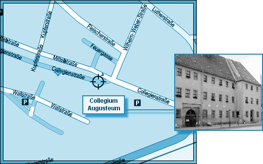
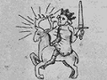

L'ICPA est une association privée créée par des amis et des collègues du journaliste Jack Lorski au lendemain de l'annonce de son meurtre en Écosse. Son seul but est d'aider les services de police et de justice internationaux à mettre fin le plus tôt possible aux agissements criminels du Phoenix.
SKL NETWORK est l'agence qui employait Jack Lorski. Elle a reçu et rendu public les deux CD-Roms envoyés par le Phoenix.
LIBERATION.FR a publié plusieurs articles sur l'affaire du Phoenix. Utilisez son moteur de recherches pour accéder à ses archives.
VICTIME N°8 : CARL BREITNER
- IDENTITÉ
Carl Breitner était professeur de théologie à Wittenberg où il résidait. Qualifié de « fou de Dieu » par Gerd Hanke, il animait un webzine qui défendait l'intégrité de la foi, du dogme et de la tradition catholique en Europe.
Il était membre laïc de Manus Domini ; d'après Karin Schaeffer Fuchs, directrice du comité anti-secte de Marburg, il était très actif au sein de cette organisation.
- PHOTO
- DATE ET LIEU DU CRIME
En novembre 2002, le corps de Carl Breitner est retrouvé dans la cave d'une maison proche du Collegium Augusteum de Wittenberg. Son décès remonte au mois d'octobre 2002. - AUTOPSIE
Carl Breitner a été étranglé avec un chapelet. Au moment de sa découverte, le corps était en état de décomposition avancé, laissant supposer une mort datant de plusieurs semaines. La machoire supérieure a été arrachée post mortem. Des inscriptions ésotériques ont été marquées sur tout le corps.
- ANALYSE
Carl Breitner est la huitième victime connue du Phoenix. Le tueur l'a d'abord choisi parce qu'il était membre de Manus Domini, condition sine qua non de sa vengeance contre cette société secrète.
Afin de respecter son rituel lié au parcours européen de son maître à penser, Giordano Bruno, le Phoenix a également choisi Carl Breitner parce qu'il habitait Wittenberg. En effet, pendant deux ans, le philosophe italien donne des leçons sur les ½uvres d'Aristote à l'Université de cette ville, mais en 1588, il apprend son excommunication, proclamée cette fois-ci par le pasteur de l'église luthérienne, Gilbert Voët ; cela l'oblige à reprendre la route.
Toujours en référence à son maître, le Phoenix a signé son crime en associant Carl Breitner à Juppiter (Jupiter), le premier principe élémentaire de la magie brunienne (De imaginum idearum compositione, 1591) :De la zone méridionale de la terre arrive un roi vêtu d'une robe de cérémonie azurée semblable à un brillant saphir ; muni d'une épée nue, il monte un cerf qui secoue sa ramure d'un or rayonnant, se ramifiant de-ci de-là. - COMMENTAIRE DU PHOENIX
• « Hélas pour vous, son webzine n'existe plus. Et pour cause… » - DOCUMENT
• Extrait d'un article de liberation.fr relatant la découverte du corps de Carl Breitner
« Petit sourire désabusé : le lieutenant Hanke semble décidément en avoir vu d'autres. D'ailleurs il en a vu d'autres, en novembre encore, à Wittenberg. Dans la cave d'une demeure toute proche du Collegium Augusteum, où enseigna Luther, justement, se trouvait le cadavre de Carl Breitner, un extrémiste, animateur d'un webzine ultra catholique aux velléités européennes. Le corps était dans un état avancé. Etranglé également, avec un chapelet en perles de bois d'olivier. Gerd Hanke ne laisse rien au hasard : Chapelet artisanal. Fabriqué dans une île grecque. Très solide. Bonne qualité. On n'en doute pas. La piste politique est écartée. Nous avons passé en revue la vie de Breitner jusqu'à la dernière minute. Hanke récite ses fiches. Pas de perversion. D'ordinaire ces catholiques sont attirés par la damnation, mais pas lui… Breitner était juste notre version locale du fou de Dieu. Alors ? Hanke dégaine d'autres photos (non merci). Il y avait également Sol Invictus de gravé sur la rampe d'escalier, et malgré la décomposition du corps on a remarqué de petites inscriptions ésotériques. C'est pourquoi on m'a appelé. Petit pincement des lèvres minces : L'assassin a gravé la formule avec un morceau de la mâchoire supérieure. »
- LIEN
• Site du Marburg Anti Sekte Komitee